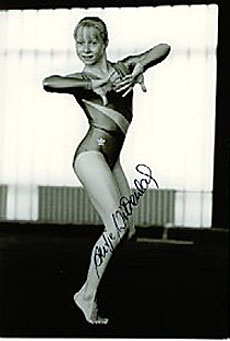

Antje Wilkenloh (GDR)
1989 GDR All-Around Champion
1988 DTB Cup All-Around Bronze Medalist

Antje was born in Rostock and trained at SC Empor Rostock. She tore her meniscus five days before the start of the 1989 Stuttgart world championships, which ended her career.
Competition Results
1983
Children's and Youth Spartakiade: 1st FX (10 year olds)
1986
Jr. GDR-USSR Dual Meet: 2nd Team, 8th AA
NOR-SWE-GDR Meet: 1st Team, 2nd FX
1987
Cottbus International: 13th AA
DTV Cup: 4th AA
GDR Championships: 2nd V, 2nd B, 2nd FX
GDR-NOR-SWE Meet: 1st Team, 3rd AA
1988
Chunichi Cup: 10th AA, 3rd B
DTB Cup: 3rd AA, 3rd B, 4th UB, 4th FX
Dynamo Cup: 3rd AA
Flatow Cup: 1st Team, 1st AA
GDR Pre-Olympic Test Meet: 6th AA
Tokyo Cup: 3rd B, 3rd FX
1989
Cottbus International: 8th AA, 2nd B, 3rd UB, 5th V
DTV Cup: 2nd AA
Dynamo Cup: 1st AA
European Championships: 8th AA, 7th UB, 8th B
GDR Championships: 1st AA, 1st V, 1st B, 1st UB
GDR-FRA Dual Meet: 1st Team, 1st AA
Moscow News: 29th AA, 7th UB
SUI-GBR-GDR Meet: 1st Team, 1st AA
This page was created on September
12, 2004 and was last updated on January 23, 2021.
© Gymn Forum